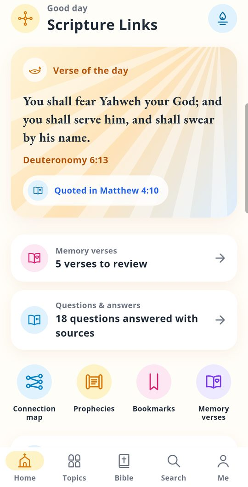
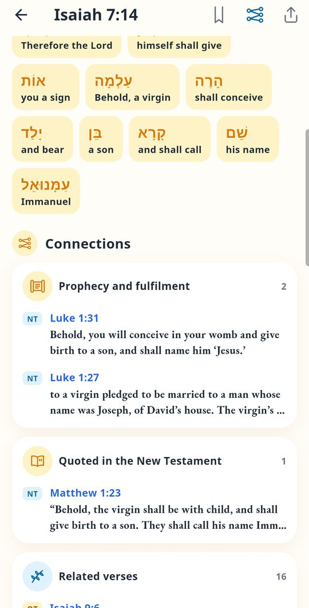
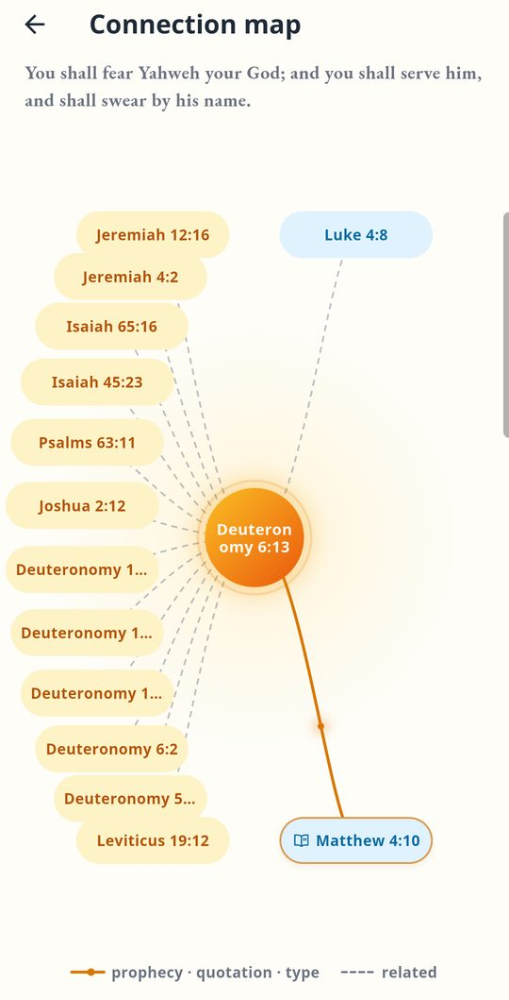
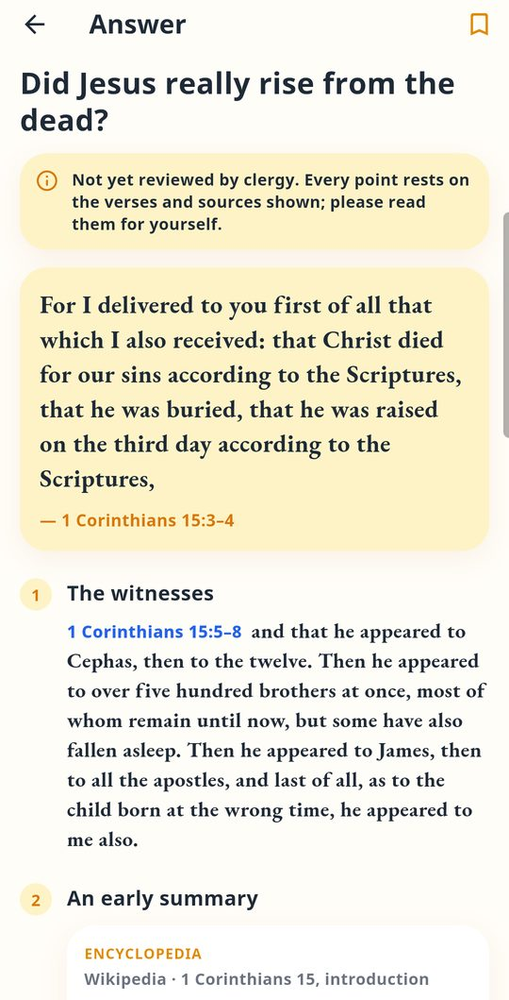
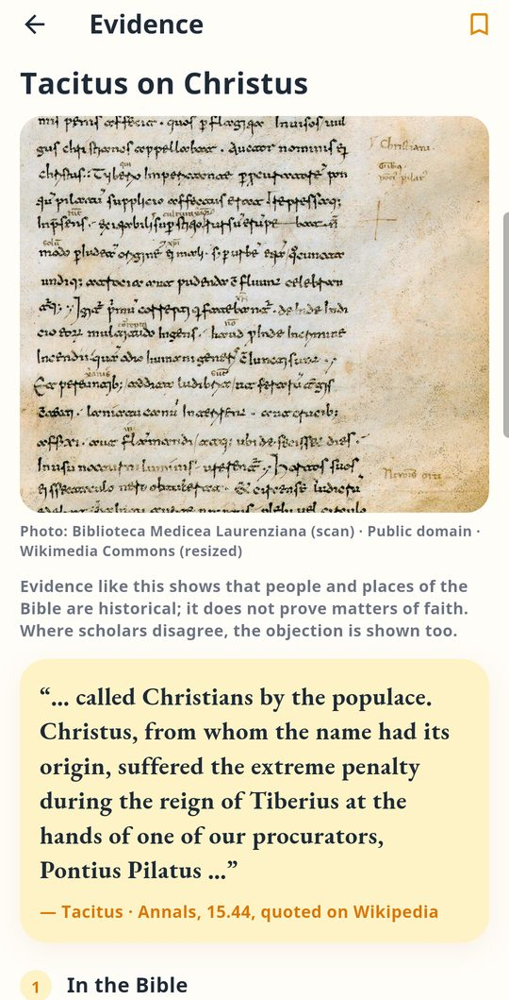
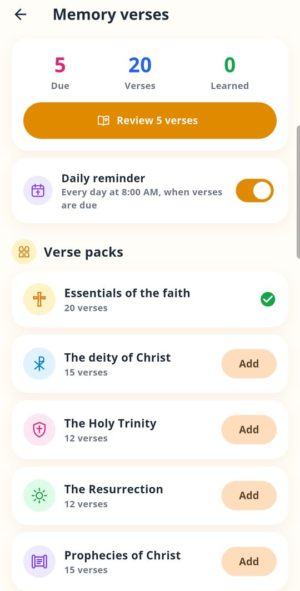

See how the Old and New Testament fit together, read the Church Fathers on the verse in front of you, and get answers to common questions about the faith, every point shown with its verses and sources.
Coming to Google Play for Android. The app is in testing now; write to us if you would like to help test it. Free, no account, no ads.

One app for reading, research and memorising Scripture, for every tradition.
Prophecy and fulfilment, quotations and types, on every verse and as an interactive map.
Common questions about the faith, answered only with Bible verses, the Creed, the Church Fathers and the catechisms of the Orthodox, Catholic and Protestant churches, side by side. Every quote links to its source and an archived copy.
Finds such as the Tel Dan Stele, the Pilate Stone and the Isaiah Scroll, and the ancient historians Tacitus, Josephus and Pliny, with photos and sources.
Their comments on the verse you are reading, and the Hebrew and Greek words behind the King James text, as optional downloads.
Spaced repetition, hints, a typing check and a daily reminder.
General Christianity, Orthodox Tewahedo, Eastern Orthodox, Catholic or Protestant, with the matching canon of books and the Ethiopian church calendar for the Tewahedo tradition.





The answers were compiled with care, but they have not yet been reviewed by clergy of any church and are not the official teaching of any church. Each one says so, and each point shows the verses and sources it rests on. Please read them for yourself and ask your priest or pastor.
Bibles included: King James Version, World English Bible and Elberfelder 1905. The interface is in English, German and Tigrinya.
Sieh, wie Altes und Neues Testament zusammenhängen, lies die Kirchenväter zum Vers vor dir und finde Antworten auf häufige Glaubensfragen, jeder Punkt mit seinen Versen und Quellen.
Bald bei Google Play für Android. Die App wird gerade getestet; schreib uns, wenn du mittesten möchtest. Kostenlos, ohne Konto, ohne Werbung.
Eine App zum Lesen, Forschen und Auswendiglernen der Schrift, für jede Tradition.
Verheißung und Erfüllung, Zitate und Vorbilder, bei jedem Vers und als interaktive Karte.
Häufige Fragen zum Glauben, beantwortet nur mit Bibelversen, dem Glaubensbekenntnis, den Kirchenvätern und den Katechismen der orthodoxen, katholischen und evangelischen Kirchen, nebeneinander. Jedes Zitat verlinkt seine Quelle und eine archivierte Kopie.
Funde wie die Tel-Dan-Stele, der Pilatus-Stein und die Jesaja-Rolle sowie die antiken Geschichtsschreiber Tacitus, Josephus und Plinius, mit Fotos und Quellen.
Ihre Auslegung zum Vers, den du gerade liest, und die hebräischen und griechischen Wörter hinter dem King-James-Text, als optionale Downloads.
Verteilte Wiederholung, Hilfen, Tippkontrolle und tägliche Erinnerung.
Christentum allgemein, Orthodoxe Tewahedo, ostkirchlich-orthodox, katholisch oder evangelisch, mit dem passenden Kanon und dem äthiopischen Kirchenkalender für die Tewahedo-Tradition.
Die Antworten wurden sorgfältig zusammengestellt, aber noch von keinem Geistlichen einer Kirche geprüft und sind keine offizielle Lehre einer Kirche. Jede sagt das, und jeder Punkt zeigt die Verse und Quellen, auf denen er beruht. Lies sie bitte selbst und frage deinen Priester oder Pastor.
Enthaltene Bibeln: King James Version, World English Bible und Elberfelder 1905. Die Oberfläche gibt es auf Englisch, Deutsch und Tigrinya.